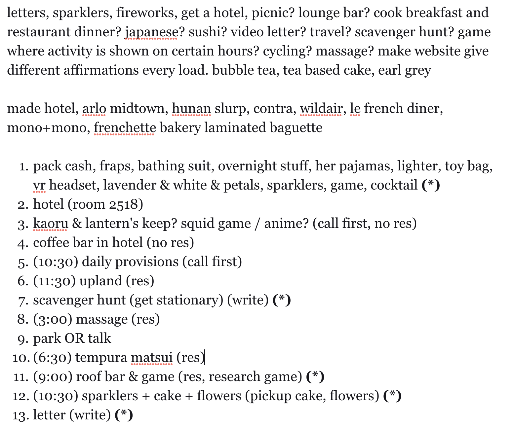
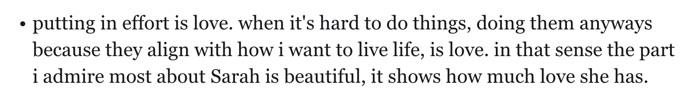

I hope today was fun!
Because you deserve happiness.
But let's talk about that later. For now I want to show you my notes for
today. You've asked to see my journal so many times, and I know this
isn't the same, but it's just a little more vulnerability than before.

You can tell from that first section that I wasn't really sure what I
was doing. I'm not even sure what some of those sentences mean now. But
at the time all I could think of was to write down as many things as
possible that might make you smile.
So I started putting together all the pieces, trying to see how they can
fit into a day. The hotel coffee bar would be a good start in case you
were tired in the morning. Or if you were wide awake we'd go to Daily
Provisions because their donuts sell out early. Brunch was at Upland
because you wanted to try more places that weren't Asian. But dinner was
at Tempura Matsui because your favorite cuisine is still Japanese. We
had a scavenger hunt because of your love for cute stationary and words
of affirmation. And we had a massage because it was going to be a long
day.
We played the relationship game because I know you value genuine
connection. And an earl grey cake because in your words, "Matcha is too
basic". Sparklers because of how much you loved them on your past
birthday. A hotel with a terrace because I cared about fire safety. My
only regret is that we didn't have a hot tub. Maybe next year.
The planning took a lot of effort, but somewhere along the line it
started being fun. I didn't think about it too much until I started
writing this letter. When I saw this in my notes.

And it struck me. I already knew that I loved you, I have more than
enough notes about that, and I knew — maybe more than you realize — how
much I loved the effort you give to the people around you.
What I didn't realize, with this oblivious brain of mine, was what it
meant that I loved planning today for you. Why I was so proud about the
effort I put in that I'd tell anybody who would listen. I probably also
told some people that didn't care to know. But this was by far the most
I've planned for anybody, ever.
In the past, whenever planning something like this came up I'd always
say I'm not a romantic person. Planning a big date is a romantic thing
to do, and that's just not me. But deep down I've always been scared
that wasn't true. That it was a sign of something worse inside of me.
That I couldn't say those touching, romantic words and mean it. That I
couldn't plan a day for somebody's happiness and enjoy it. Because what
would it mean for me if I couldn't find happiness in the happiness of
somebody I loved? And what kind of love would a kid that never got
enough from his parents even know?
But here's the thing — I loved planning this day for you. I think just
by loving you, it's healing me. We've talked before about how sometimes
people like us need to help others to feel deserving of the good things
in life. I need you to know that you deserve love and happiness just by
being yourself, because just by being yourself you've shown me that I'm
capable of loving somebody as much as I love you.
With more love than ever,
Me